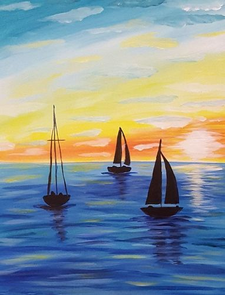

Cette scène 3D s’inspire d’une aquarelle représentant trois voiliers naviguant vers un coucher de soleil flamboyant. Les silhouettes sombres des bâteaux se détachent sur un ciel aux teintes dorées et oranges, reflétées dans une mer bleue profonde.
Nous avons cherché à reproduire cette atmosphère lumineuse en Three.js en travaillant sur plusieurs aspects visuels clés : la couleur chaude du ciel via le shader Sky, le reflet de la scène dans l’eau grâce au Reflector, et l’orientation des voiliers directement tournés vers l’horizon embrasé, comme dans la peinture originale.
Le brouillard volumétrique double couche et les nuages en sprites renforcent la profondeur atmosphérique caractéristique des peintures à l’aquarelle, où les lointains se fondent dans la brume et la lumière.
Le soleil est simulé via la classe Sky de Three.js, qui résout les équations de diffusion de Rayleigh et de Mie en temps réel. Les paramètres de turbidité, d’élévation et d’azimut définissent la couleur ambiante de toute la scène — ici réglés pour un coucher de soleil à 2° d’élévation avec une teinte orangeée chaude.
Une DirectionalLight positionnée selon le vecteur solaire (sunPosition du Sky) simule l’astre. Les ombres sont activées via PCFSoftShadowMap avec une shadow map de 2048×2048 pixels, projetant des ombres douces sur la surface de l’eau depuis les coques des bateaux.
Les coques et mâts des bateaux utilisent une normal map pour simuler le relief des planches de bois sans augmenter la géométrie. Une specular map contrôle l’intensité du reflet pixel par pixel — les arêtes mouillées brillent davantage que le bois brut mat. La voile applique la même normal map avec une intensité réduite (0.25) pour le grain du tissu.
Les matériaux MeshPhongMaterial des bateaux sont déclarés avec transparent: true. Leur propriété opacity est exposée via des sliders dans le panneau de contrôle, permettant de modifier la transparence de la coque, du mât et de la voile indépendamment, sans recompilation des shaders.
L’eau combine deux systèmes : un Reflector avec shader GLSL custom (distorsion sinusoïdale + fresnel simplifié) pour les réflexions en temps réel, et une texture Water animée. La bouée utilise une environment map générée via PMREMGenerator.fromScene() depuis le Sky pour des reflets métalliques physiquement corrects.
Cinquante groupes de sprites utilisent une texture PNG avec transparence alpha pour les nuages, animés en translation avec wrap-around et balancement vertical sinusoïdal. Le brouillard est double couche — un système de particules GLSL (near et far) superposé à un FogExp2 natif de Three.js — dont la densité globale est contrôlée par slider.
Les OrbitControls contraignent la caméra entre un angle polaire minimum (20°) et l’horizon (≈80°), empêchant de passer sous l’eau. Un système de raycasting détecte le bateau sous la souris et projette la position de drag sur un plan horizontal Y = 50, offrant un déplacement intuitif des embarcations en 3D.
La caméra est positionnée en hauteur avec un angle plongeant depuis (-400, 300, 1800), simulant un point de vue aérien qui révèle simultanément la surface de l’eau, les bateaux et l’horizon embrasé. Ce placement met en valeur à la fois l’effet miroir de l’eau et la profondeur atmosphérique du ciel.